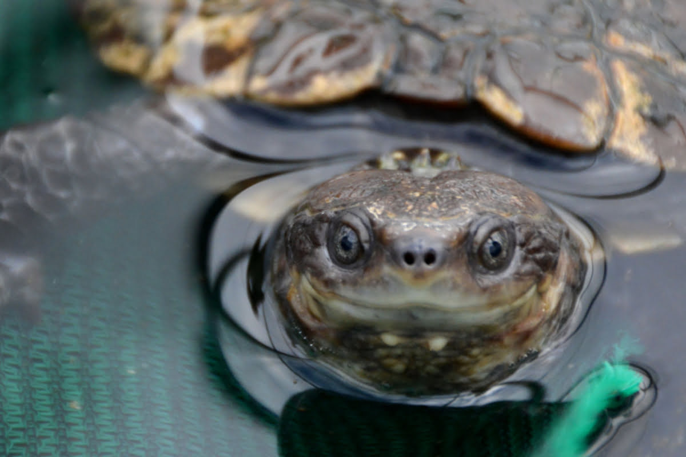

Western Swamp Tortoise Pseudemydura umbrina The Western Swamp Tortoise is one of Australia's most endangered reptiles. These small tortoises are distinguished by their short necks, distinctive shells, and preference for living in ephemeral swamps. They are known for their unique behavior of burrowing into the mud during dry periods.

Habitat
Western Swamp Tortoises are found in a few locations in southwestern Australia. Their habitats are seasonal swamps that fill during the winter and dry out in the summer. These swamps provide the necessary conditions for their breeding and foraging.
Diet
The diet of Western Swamp Tortoises includes small aquatic invertebrates such as insects, worms, and crustaceans. They are opportunistic feeders, taking advantage of the seasonal abundance of prey in their swamp habitats.
Conservation Status
Western Swamp Tortoises are critically endangered, with very few individuals remaining in the wild. Major threats include habitat destruction, altered hydrology, predation by introduced species, and climate change. Conservation efforts focus on habitat protection, captive breeding, and reintroduction programs.
How to Help
You can help protect Western Swamp Tortoises by supporting conservation organizations, advocating for the protection of their swamp habitats, and raising awareness about their endangered status. Donations to wildlife conservation groups and participation in habitat restoration projects can make a significant impact.
"Saving Australia's Endangered, Together for a Wilder Future"